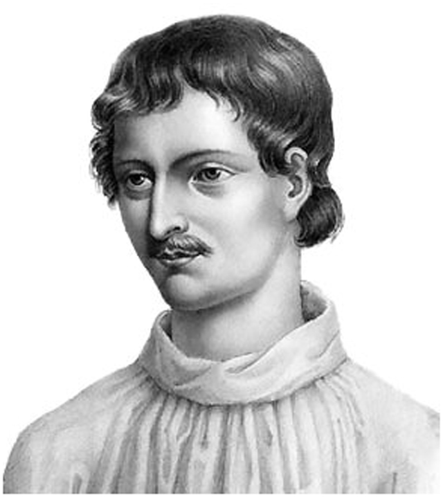

Джордано Бруно
1548 г. – 17 февраля 1600 г.

Детство и юность
Бруно родился в семье военного в 1548 году в городе Ноле, что в неаполитанском королевстве. О его детстве мало что известно. Первые десять лет прошли довольно безмятежно, насколько это было возможно в условиях жестоких притеснений со стороны испанских властей. Правил неаполитанским королевством герцог Альба, и под его руководством из страны выгребалось все, что имело хоть какую-то ценность. Но хуже всего была инквизиция, всюду преследовавшая свободу совести. Это была реальная власть, подчинившая себе весь уклад жизни. Люди истреблялись по малейшему подозрению. В этих условиях предстояло жить Джордано Бруно!
Бруно родился в семье военного в 1548 году в городе Ноле, что в неаполитанском королевстве. О его детстве мало что известно. Первые десять лет прошли довольно безмятежно, насколько это было возможно в условиях жестоких притеснений со стороны испанских властей. Правил неаполитанским королевством герцог Альба, и под его руководством из страны выгребалось все, что имело хоть какую-то ценность. Но хуже всего была инквизиция, всюду преследовавшая свободу совести. Это была реальная власть, подчинившая себе весь уклад жизни. Люди истреблялись по малейшему подозрению. В этих условиях предстояло жить Джордано Бруно!
Тайно Бруно написал комедию, где сатирически изображались нравы тамошнего общества. Говорят, позднее Мольер заимствовал у него немало сцен для своих комедий. Пишет Бруно и сонеты.
Год за годом выработалось новое мировоззрение. Конечно, так трудно сдержаться, и с уст срываются опасные слова. На него поступает первый донос, что Джордано вынес из своей келии всех угодников и оставил одно только Распятие. Только молодость спасла Джордано.
Философия Джордано Бруно
Идеи о Боге
Идеи о Боге у Джордано Бруно очень своеобразны, здесь странным образом переплетаются христианство, египетские верования, идеи «о Боге, как о мировой материи», «Бог - всеобщий ум», «Бог - единство Вселенной и Природы», «Бог в вещах». По Бруно, следует восстановить культ природных богов Греции и религию, с помощью которой египтяне постигли божественные идеи, божественное Солнце, Единое неоплатоников.
Способ постижения Бога Джордано Бруно можно назвать пантеистическим. Согласно такому подходу, вся природа сакральна. Представление о Боге можно получить, созерцая природу, поскольку Бог присутствует во всем, что нас окружает. Он находится во всем, что воспринимается нами, и во всем, что лежит за гранью нашего восприятия.
Волю Бога, по мнению Бруно, необходимо искать в «неодолимом и нерушимом законе природы, в благочестии души, хорошо усвоившей этот закон, в сиянии солнца, в красоте вещей, происходящих из лона нашей матери-природы, в ее истинном образе, выраженном телесно в бесчисленных живых существах, которые сияют на безграничном своде единого неба, живут, чувствуют, постигают и восхваляют величайшее единство…».
Таким образом, объектом философии Ноланца, как называет себя Бруно, становится созерцание единства природы. Бруно считал, что если религия опирается только на догматы, то это убивает разум, не приносит человеку ожидаемого покоя. Исполненный надежды на будущее, он видел впереди возможность появления некоторой философской религии, которая бы заменила все культы и объединила человечество.
«Вот, значит, никогда не обоготворялись сами по себе крокодилы, петухи, лук, репа, но боги и божество в крокодилах, петухах и прочем; божество, которое с течением времени, от места к месту, постепенно, то тут то там, проявлялось, проявляется и будет проявляться в различных предметах, хотя бы они и были смертны: египтяне смотрели на божество, как на близкое и дружественное им, а не как на высшее, заключённое в себе самом, не пребывающее в сотворённых вещах. Смотри же, как простое божество, которое находится во всех вещах, плодоносная природа, мать хранительница вселенной сообразно различным своим проявлениям отображается в различных предметах и принимает различные имена. Смотри, как к ней единой, различным образом должно восходить, приобщаясь к различным дарам: иначе напрасно будешь черпать воду сетями и ловить рыбу лопатой.
Для всего этого, конечно, необходимы та мудрость и суждение, то искусство, деятельность и пользование духовным светом, каковые духовное солнце открывает миру в иные времена больше, в иные - меньше. Вот этот обряд и называется Магией, и поскольку занимается сверхъестественными началами, она - божественна, а поскольку наблюдением природы, доискиваясь до её тайн, она - естественна, срединной и математической называется, поскольку исследует силы и способности души… »
«Ты не знаешь, о Асклепий, что, как Египет -- образ неба… так наша земля -- мировой храм. Но, увы, наступит время, когда станет ясно, что Египет тщетно старался быть ревнивым хранителем божественного. <...> О Египет, Египет, от твоих религий останутся только легенды. <...>
Так Джордано Бруно отзывается о католицизме и предлагает свое видение религии. Бруно говорит о жизни души и о вселенском разуме, который есть Бог, или Божественное. «Божественное полностью необъяснимо в физическом плане, лишь в бесконечном, и только в нем оно проявляется в собственной универсальности, в соответствии с бесчисленными видами и согласно расположению бесконечного, везде начало сходится с концом, а центр со всех сторон связан с бесконечным. То, что идет от вечного, божественного, согласно всякому бытию, как распространение бесконечной доброты, есть результат божественного всемогущества».
«Магия, в той мере, в какой она обращается к сверхъестественному, является божественной; а в той, в какой она обращена к созерцанию природы и к раскрытию ее секретов, она природная; и она выступает математической посредницей в том, что касается рассуждений и действий души на границе телесного и духовного, духовного и интеллектуального».
У Бруно Бог становится имманентным, а жизнь космоса -- божественной жизнью или бесконечным ее распространением. Поэтому становится понятным, как совпадают понятия Бога и природы, формы и материи, действия и силы, так, что Бруно смог написать: «Отчего становится нетрудно принять в конце концов, что все, в соответствии с субстанцией, едино, что, может быть, и имел в виду Парменид, вульгарно трактуемый Аристотелем».
Идеи о Вселенной
Выше всего Бруно ставит «причину», или высшее «начало», именуемое им также сверхразумом, от которого происходит все, но который сам при этом остается для нас непознаваемым. «Вся вселенная есть следствие этого начала; но из знания следствия нельзя получить знание причины, так же, как от статуи невозможно перейти к образу скульптора -- ее создателя. Это начало -- не что иное, как Единое Плотина».
Бруно утверждал, что Вселенная бесконечна и существует бесчисленное количество миров. Воображение Бруно рисует те дали, существование которых с математической точки зрения подтверждает, причем не полностью, только наука ХХ века. О нашей Солнечной системе он образно говорит как о маленьком атоме, развивающемся и продвигающемся среди бесконечного числа ему подобных, внутри великого живого организма -- нашей Вселенной, не имеющей ни начала, ни конца. Наша Вселенная состоит не только из клеток -- галактик, но также из множества параллельных миров, постоянно трансформирующихся; в них проявляется бесконечное количество форм жизни и принципов эволюции.
«Я полагаю Вселенную бесконечной, то есть созданием бесконечного божественного могущества. Ибо я считаю недостойным божественной благости и могущества, чтобы Бог, обладая способностью создать помимо этого мира другой и другие бесконечные миры, создал конечный мир. Таким образом, я заявляю, что существуют бесконечные миры, подобные миру земли». От божественной субстанции -- как потому, что она бесконечна, так и потому, что она бесконечно далека от результатов нашей дискурсивной деятельности, -- у нас нет ничего, кроме останков (говорят последователи Платона); отдаленного эффекта (говорят перипатетики); облачения (говорят каббалисты); спин и задов (говорят талмудисты); зеркал, теней и загадок (говорит Апокалипсис)". " Сравнение со статуей в значительной степени неадекватно, -- добавляет Бруно, -- ведь статуя, являясь законченным произведением, может быть познана полностью; вселенная же бесконечна, и поэтому сложно познать первопричину, то есть начало по его следствию".
«Итак, вселенная едина, бесконечна, неподвижна. Единая абсолютная возможность, единое действие, единая форма, или душа, единая материя, или тело, единая вещь, единое существо, единое максимальное и наилучшее, которое недоступно пониманию, она не может иметь границ и конца и потому безгранична и бесконечна, и, вследствие этого, неподвижна. Она не перемещается в пространстве, ибо не имеет вне себя ничего, к чему она могла бы переместиться, потому что она -- все. Она не возникает; ибо нет другого бытия, которого она могла бы желать или ожидать, поскольку она охватывает все бытие. Она не разлагается; потому что нет другой вещи, в которую бы она превратилась, поскольку она -- всякая вещь Она не может уменьшаться или расти, поскольку она бесконечна, а к этому нельзя ни прибавить, ни отнять.
Идеи о познании, душе, разуме
Джордано Бруно в своих работах говорит о трех разновидностях интеллекта -- божественном, мировом и множестве частных, но решающую роль приписывает именно мировому -- центральному, связующему звену этой триады.
«Всеобщий ум выступает как тот художественный интеллект, который изнутри семенной материи сплачивает кости, протягивает хрящи, выдалбливает артерии, вздувает поры, сплетает фибры, разветвляет нервы и со столь великим мастерством располагает целое».
«Египетская» религия лучше христианской, поскольку это религия ума, реализующаяся в преодолении культа солнца, видимого образа солнца идеального, каковым является интеллект. «Тени идей» не осязаемы, они «магические образы», блики божественного разума, копиями которых являются осязаемые вещи. Обретая эти «магические образы», можно получить в уме слепок универсума, а значит, не только удивительную память, активизацию всех способностей человека, но и сокровенные знания.
Душу Бруно понимал так: " Душа как формальное начало, названная ими источником форм; материя, из которой творится и формуется любая вещь -- хранилище форм". «Формы динамически структурируют материю, движущуюся в разные стороны, именно потому, что все одухотворено, все живо. В каждой вещи заключена мировая душа, а в душе присутствует вселенский разум, вечный источник форм, которые постоянно обновляются».
Чтобы узнать окончательное отношение Бруно к познанию, необходимо прочитать миф об Актионе и Диане. В центре мифа рассказ об охотнике Актеоне, который, не успев налюбоваться Дианой, был превращен из охотника в оленя, дичь, за которой охотятся, и был растерзан своими собаками. Диана -- символ божества и единства Природе, а Актеон символизирует интеллект в погоне за истиной и божественной красотой; сторожевые псы -- желания, а борзые Актеона (более быстрые) символизируют мысли.
Итак, Актеон обращен в объект познания (дичь), а его псы (мысли и желания) -- в охотников. Почему? Да потому, что искомая истина -- в нас самих, и, открыв это, мы открываем суетность наших собственных мыслей и понимаем,
«Таким образом, псы -- мысли о божественном - пожирают Актеона, умерщвляя его как вульгаризацию, освобождая от смятения чувств, из тюрьмы плоти; чтобы он больше не любовался на свою Диану через щели и окна, но, разрушив стену, смог бы увидеть весь горизонт».
То есть, говоря иначе, чтобы обрести истину, нужно освободить себя, освободить свой разум и искать эту истину уже внутри себя!
Личная жизнь
О личной жизни Бруно практически ничего не известно. Джордано не был женат, не имел детей, и даже учеников и последователей у мыслителя не было. На фото сохранившихся портретов Джордано предстает хрупким молодым человеком с задумчивым выражением лица.
Смерть
Вернувшись из странствий по Европе обратно в Италию, Джордано Бруно тут же попал в руки инквизиции. По мнению ряда биографов, философ мог бы избежать смертного приговора, если бы не его выступления против монастырских прибылей и имений и не требования об их конфискации. Другие исследователи считают, что высказывания мыслителя о множественности миров и бесконечности Вселенной стали основной причиной, вызвавшей гнев инквизиции.
Но ведь и теории Галилея явно противоречили церковным доктринам, почему же к нему инквизиция отнеслась гораздо мягче и терпимей? По мнению исследователей, ответ на этот вопрос кроется в методах, которыми пользовались мыслители. Галилео был классическим ученым, использовавшим математический инструментарий в разработке теорий. А Джордано, скорее, мистик, мыслитель, применявший вместо научных методов магию там, где не хватало аргументов.
Ряд биографов говорит о том, что казнь Джордано Бруно стала результатом не столько борьбы с наукой и просвещением, сколько борьбы за власть. Бруно был невероятно убедителен в своих учениях, а основные идеи его заключались в отвержении религии как таковой, что было довольно опасным вольнодумием в эпоху средневековья. Арестовали Бруно после доноса некоего Мочениго, обвинившего философа в ереси. Судебный процесс длился шесть лет, которые философ провел в заточении в римской тюрьме.
Ряд исследователей считает, что инквизиция дала возможность бывшему священнику отречься от ереси и остаться в живых, но тот отказался. Текст приговора, который вынесла инквизиция в отношении еретика Джордано, был утерян, известно лишь, что вина заключалась вовсе не в научных теориях, а в богохульстве бывшего служителя церкви. Именно угроза церковной власти стала основной причиной казни непокорного и упрямого философа.
Основные труды
За свою насыщенную жизнь Джордано Бруно написал несколько естественнонаучных трудов и художественных произведений. Среди научных сочинений наиболее значимыми называют:
- «О естественной магии» (A proposito di magia naturale) (1588);
- «О бесконечности вселенной и мирах» (1584);
- «О бесконечности вселенной и мирах» (1584);
- «О монаде, числе и фигуре» (A proposito di monade, numero e figura) (1591);
- «Изгнание торжествующего зверя» (Esilio della bestia trionfante) (1584);
- «О безмерном, неисчислимых и неизобразимых» (Circa immenso, incalcolabile e incommensurabile) (1591).